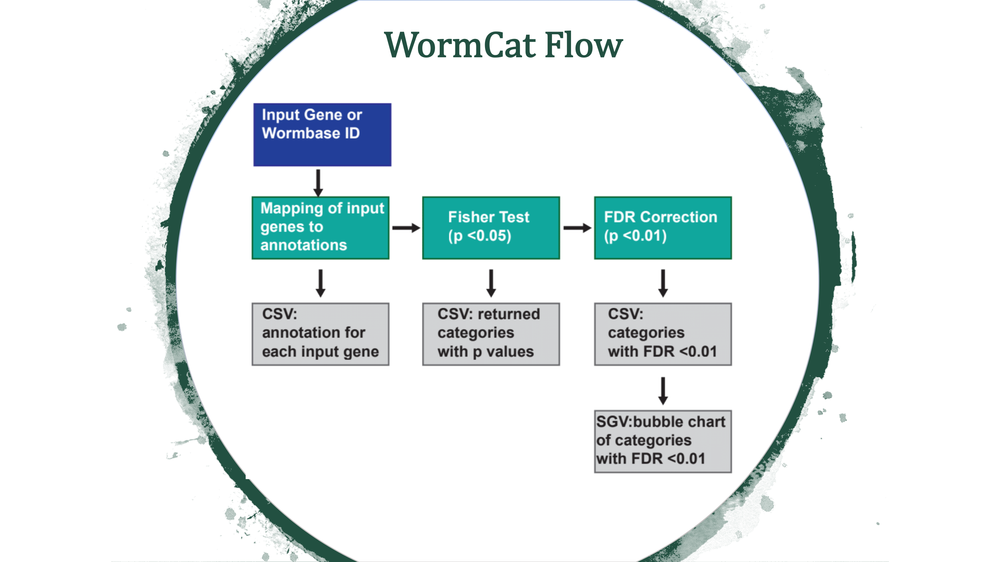
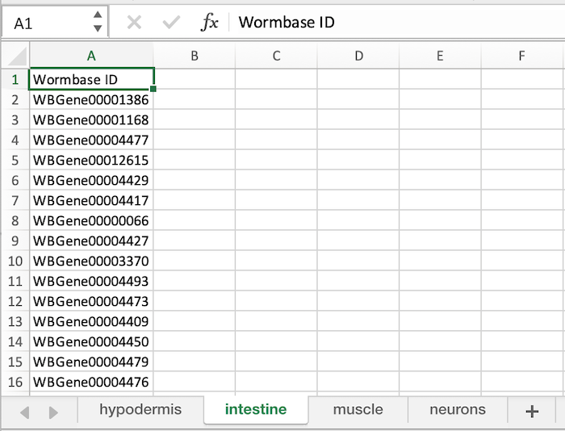

WormCat is a tool for annotating and visualizing gene set enrichment data from C. elegans microarray, RNA seq or RNAi screen data.
A sample file for testing is provided here with Wormbase ID's. (Note: Make sure to select Wormbase ID as the Input Type.)
WormCat will provide enrichment data from the nested annotation list with broad categories in Category 1 (Cat1) and more specific categories in Cat2 and Cat3. For example, sbp-1 is in Metabolism: lipid: transcriptional regulator. WormCat output provides scaled bubble charts with enrichment scores that meet a Bonferroni false discovery rate cut off of 0.01 as SGV files. The download directory includes CSV files on the data used for the graph (e.g. rgs_fisher_cat1_apv.csv) (apv is appropriate p value). We also include CSV files with categories that have at least one returned gene and p value from Fisher’s exact test (rgs_fisher_cat1.csv). The rgs_and_category.csv file returns the input gene with annotations.
Once you are comfortable running Wormcat with a single dataset, you may wish to execute Wormcat with multiple datasets. Running with multiple datasets is possible by aggregating your datasets into a Microsoft Excel File and dropping the file in the Drop File Here zone.
You can download an Example Microsoft Excel file here to confirm the required format. Please take care to follow the naming conventions to avoid processing errors.
Below is an image of a correctly formatted Excel File.

Frequent users might find it useful to install WormCat locally. When running locally a Python script is available on GitHub for batching and running WormCat on multiple gene sets. Additionally when running locally, the annotation list may be modified to accommodate user specific preferences.
We have provided a number of Videos that users may find useful when installing and running Wormcat Locally.
The SVG files have layers that can be removed to allow the text and circles to be removed for formation of composite WormCat figures.
WormCat: an online tool for annotation and visualization of Caenorhabditis elegans genome-scale data
Amy D Holdorf, Daniel P Higgins, Anne C. Hart, Peter R Boag, Gregory Pazour, Albertha J. M. Walhout, Amy Karol Walker
GENETICS February 1, 2020 vol. 214 no. 2 279-294;